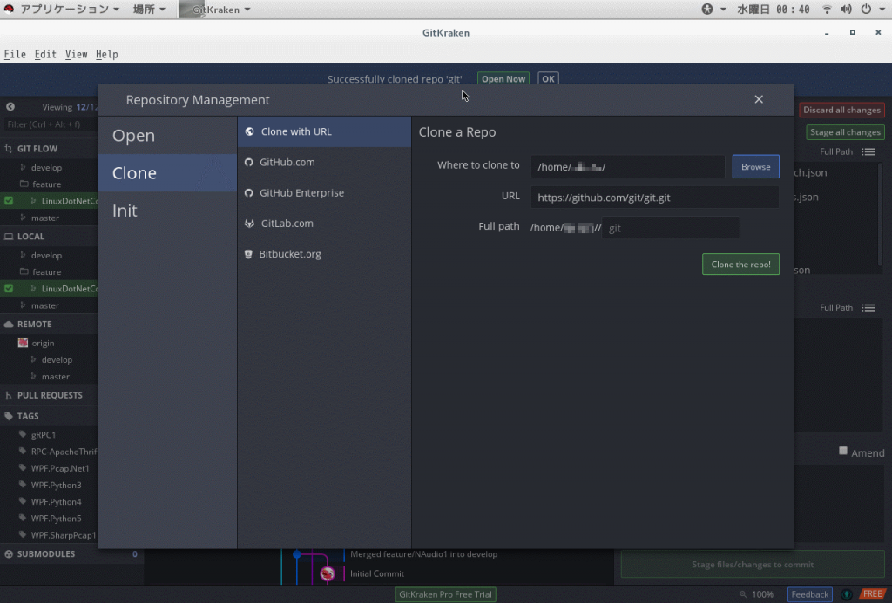
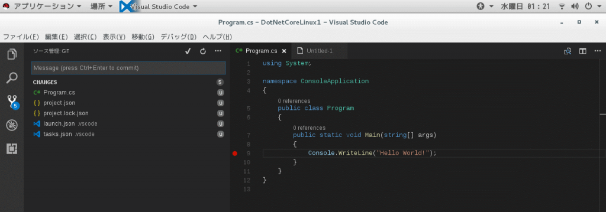
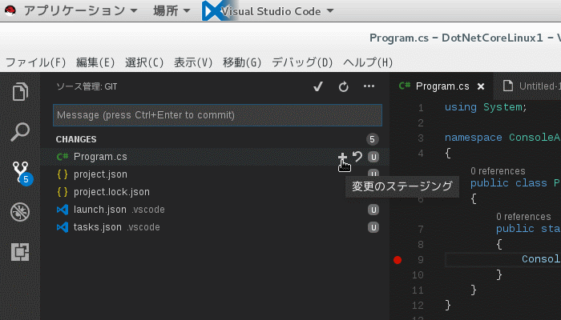
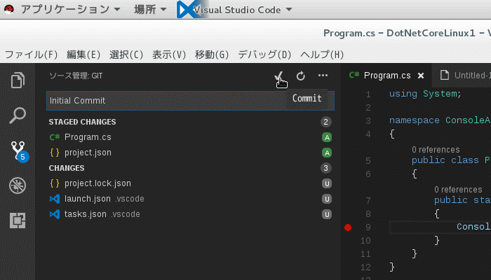

Introduction
前回は、CUI、GUIから.NET Coreのプロジェクトを実行、デバッグしました。
今回はちょっと脇道で、バージョン管理システムとしてgitをVisual Studio Codeから使ってみます。 個人的には、コミット、履歴表示、元に戻す(チェックアウト)は、IDEから実施し、プッシュやブランチの作成は、Gitクライアントから実行するという切り分けが好きです。
Preparation
まずは、gitをインストールする必要があります。 Visual Studio Codeは、gitに標準で対応していますが、gitの機能そのものにはgitそれ自体に依存しています。 下記のコマンドで実行しますが、-yはこの時点で付与しません。 [code lang=”sh”] $ yum install git 読み込んだプラグイン:langpacks, product-id, search-disabled-repos, subscription-manager 依存性の解決をしています –> トランザクションの確認を実行しています。 —> パッケージ git.x86_64 0:1.8.3.1-6.el7_2.1 を インストール –> 依存性の処理をしています: perl-Git = 1.8.3.1-6.el7_2.1 のパッケージ: git-1.8.3.1-6.el7_2.1.x86_64 –> 依存性の処理をしています: perl(Error) のパッケージ: git-1.8.3.1-6.el7_2.1.x86_64 –> 依存性の処理をしています: perl(Git) のパッケージ: git-1.8.3.1-6.el7_2.1.x86_64 –> 依存性の処理をしています: perl(Term::ReadKey) のパッケージ: git-1.8.3.1-6.el7_2.1.x86_64 –> トランザクションの確認を実行しています。 —> パッケージ perl-Error.noarch 1:0.17020-2.el7 を インストール —> パッケージ perl-Git.noarch 0:1.8.3.1-6.el7_2.1 を インストール —> パッケージ perl-TermReadKey.x86_64 0:2.30-20.el7 を インストール –> 依存性解決を終了しました。
依存性を解決しました
==================================================================================================================================================================================== Package アーキテクチャー バージョン リポジトリー 容量 ==================================================================================================================================================================================== インストール中: git x86_64 1.8.3.1-6.el7_2.1 rhel-7-server-rpms 4.4 M 依存性関連でのインストールをします: perl-Error noarch 1:0.17020-2.el7 rhel-7-server-rpms 32 k perl-Git noarch 1.8.3.1-6.el7_2.1 rhel-7-server-rpms 53 k perl-TermReadKey x86_64 2.30-20.el7 rhel-7-server-rpms 31 k
トランザクションの要約 ==================================================================================================================================================================================== インストール 1 パッケージ (+3 個の依存関係のパッケージ)
総ダウンロード容量: 4.5 M インストール容量: 22 M Is this ok [y/d/N]: [/code] どうもyumリポジトリに入っているgitのバージョンが1.8とかなり古いようです。 (2017/05/17時点で最新版は2.13.0) なので、自分でビルドします。 作業手順は下記を参照しました。
Build
ただし、上記は、古いgitがインストールされている環境です。 対して、こっちはGitKrakenがいるので、GitKrakenを使って、gitのソースをCloneします。 cloneするソースはmasterブランチなので、https://github.com/git/git.gitになります。

{kind=link}
Cloneが完了した、Clone先のフォルダに移動します。 まず必要な依存関係を解決します。 [code lang=”sh”] $ cd <gitのクローン先> $ yum -y install curl-devel expat-devel gettext-devel openssl-devel zlib-devel perl-ExtUtils-MakeMaker # GCCがないならインストール $ yum -y install gcc [/code] 続いて、ビルドとインストールを実行します。 GCCがないなら、makeそのものが失敗するので要確認。 [code lang=”sh”] $ make prefix=/usr/local all $ make prefix=/usr/local install [/code] 私の場合、インストール完了後、再度シェルを立ち上げ直すと、gitが有効になりました。 [code lang=”sh”] $ git –version git version 2.13.GIT [/code]
git from Visual Studio Code
gitをインストールし、Visual Studio Codeを起動し、プロジェクトフォルダを開きます。 既に、プロジェクトフォルダがgitで初期化されている場合、下記のように、左端のソース管理から、未コミット状態のファイル一覧が表示されるようになります。
 次に、ファイルにカーソルを合わせると、**+ボタンが表示されるので、それをクリックすることでステージングできます。  ステージングが完了したらコメントを入力します。 入力が完了したらEnterキーまたはコミットボタン**でコミットできます。 
後は、pushするなり何なりします。 私は前述のように、pushはGitKraken等のGitクライアントに任せます。 一応Visual Studio Codeからpush等も可能ですが、ここでは割愛します。
{kind=link}
{kind=link}
{kind=link}
Conslusion
開発環境が完成した感じです。 後は、Visual Studio Codeに慣れていけば、Macでもどこでも開発できるでしょう。